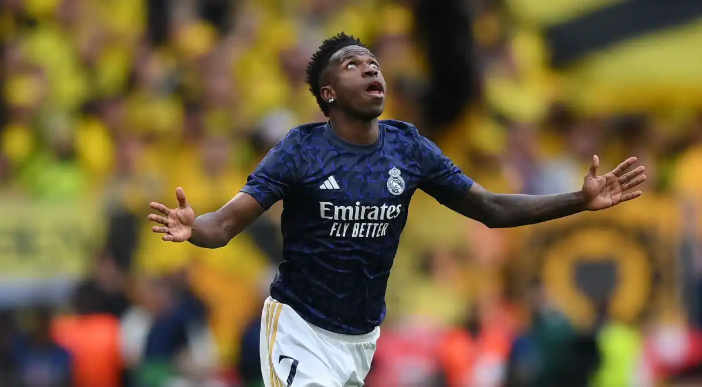

Vinicius José Paixão de Oliveira Junior (São Gonçalo, 12 de julho de 2000)
é um futebolista brasileiro que atua como ponta-esquerda. Atualmente joga pelo Real Madrid
e pela Seleção Brasileira.
Em 2017, o atacante entrou para a história do futebol mundial. Com apenas 16 anos,
foi vendido pelo Flamengo ao Real Madrid por 45 milhões de euros.
Este valor representou, à época, a 2ª maior venda da história do futebol brasileiro,
atrás apenas da venda de Neymar, e ainda o maior valor já pago por um futebolista
com menos de 19 anos de idade.No dia 28 de maio de 2022, foi autor do gol que
deu o 14° título de Liga dos Campeões da UEFA ao Real Madrid.
Atualmente sua carreira é agenciada pela agência Play9.
Astro do momento
